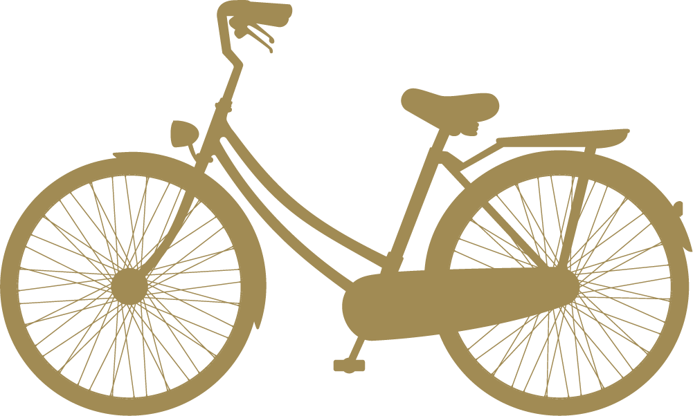

Public Transportation
- Bus: The city has an extensive bus network, with routes covering all major
areas. You can find route maps and schedules at the bus station or online.
- Subway: The subway system is fast and convenient, with trains running from
early morning until late at night. Fares are based on distance traveled.
Car
- Car Rental: There are several car rental companies in the city. You can rent
a car with a valid driver's license and credit card.
- Parking: There are paid parking spots throughout the city. Be sure to check
the parking regulations in the area you're visiting.

Bicycle
- Bike Sharing: The city offers a bike-sharing program with stations located
throughout the city. You can rent a bike with a credit card or through the
program's mobile app.
- Private Bike: If you have your own bike, you can use bike lanes on the road
or ride on the sidewalk outside of busy areas.
Pedestrian
- Walking: Many areas of the city are pedestrian-friendly, with sidewalks and crosswalks. Always look both ways before crossing the street.
Electric Scooters: Electric scooters are available for rent throughout the city. Be sure to follow traffic laws and wear a helmet.
- Private Bike: If you have your own bike, you can use bike lanes on the road
or ride on the sidewalk outside of busy areas.